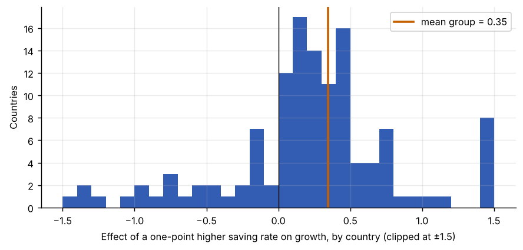

Step 1The question and the model
The question is one of the oldest in growth economics: do countries that save more grow faster? In the Solow model a higher saving rate raises the level of income and, during the transition, the growth rate. But there is no reason to expect the same relationship in Japan, Chile and Nigeria: financial systems, openness and the use of saving differ.
| Symbol | Variable | Definition | Expected sign |
|---|---|---|---|
| \(g_{it}\) | growth |
Growth of real GDP per capita, % (computed below) | dependent variable |
| \(s_{it}\) | sr |
Saving rate, % of GDP | positive |
| \(\beta_i\) | — | Country-specific effect of saving on growth | what we want to average |
The model lets every country have its own slope \(\beta_i\). The parameter of interest is the average slope \(\beta\).
Pooled or mean group?
Fixed effects imposes \(\beta_i = \beta\) for all countries. If that is wrong, the FE estimate is a weighted average of the \(\beta_i\), with weights that depend on the variance of each country's saving rate, not on anything economically meaningful, and its standard error ignores the slope heterogeneity. The mean group estimator (Pesaran and Smith 1995) estimates each \(\beta_i\) separately and averages them. Its standard error comes from the dispersion of the \(\beta_i\) across countries, so it is valid whatever the heterogeneity. It needs T large enough to estimate a regression for each country.
How to write it: model section
We allow the effect of saving on growth to differ across countries, \(g_{it} = \alpha_i + \beta_i s_{it} + \varepsilon_{it}\), and estimate the average effect \(\beta = E(\beta_i)\) with the mean group estimator of Pesaran and Smith (1995), and with the common correlated effects mean group estimator of Pesaran (2006), which in addition controls for unobserved common factors.
Step 2Load the data and run the pre-tests
import pandas as pd
import numpy as np
import statsmodels.api as sm
import matplotlib.pyplot as plt
from linearmodels.panel import PanelOLS
from panel_tests import cd_test, cips_test, fisher_adf_test, slope_test
from panel_estimators import mean_group, cce_mg # examples/panel_estimators.py
raw = pd.read_csv("growth_saving.csv").sort_values(["country", "year"])
raw["growth"] = 100 * np.log(raw["gdp"]).groupby(raw["country"]).diff() # gdp is real GDP per capita
df = raw.dropna(subset=["growth"])[["country", "year", "growth", "sr"]]
print(f"{df['country'].nunique()} countries, {df['year'].min()}-{df['year'].max()}, {len(df)} observations")
for v in ["growth", "sr"]:
W = df.pivot(index="year", columns="country", values=v)
cd, p, r = cd_test(W); c = cips_test(W)
print(f"{v:7s} CD = {cd:6.2f} (p {p:.3f}, mean |rho| {r:.2f}) CIPS = {c['stat']:.2f} (p {c['p']:.4f})")
s = slope_test(df, "country", "growth", ["sr"])
print(f"Pesaran-Yamagata: adjusted delta = {s['delta_adj']:.2f} p-value = {s['delta_adj_p']:.4f}")125 countries, 1961-1985, 3125 observations growth CD = 36.30 (p 0.000, mean |rho| 0.19) CIPS = -3.35 (p 0.0005) sr CD = 27.76 (p 0.000, mean |rho| 0.36) CIPS = -2.11 (p 0.0221) Pesaran-Yamagata: adjusted delta = 6.64 p-value = 0.0000
How to read it
- 125 countries over 25 years: long enough to estimate a regression for each country.
- Cross-sectional dependence. The CD test rejects for both variables. World growth has a common cycle, so CIPS is the right unit-root test.
- Stationarity. CIPS rejects a unit root for both growth and the saving rate: both are I(0), and a model in levels is valid.
- Slope heterogeneity. The Δ test rejects decisively. The effect of saving on growth differs across countries, so pooling the slopes is not defensible.
Stationary variables with heterogeneous slopes: this is where the model selection tool recommends mean-group estimation.
Step 3Estimate one regression per country
mg = mean_group(df, "country", "year", "growth", ["sr"])
b = mg["units"]["sr"]
print(f"Country slopes: {len(b)} estimated")
print(b.describe()[["mean", "std", "min", "25%", "50%", "75%", "max"]].round(3).to_string())
print(f"Share of countries with a positive slope: {(b > 0).mean():.2f}")
fig, ax = plt.subplots()
ax.hist(b.clip(-1.5, 1.5), bins=30, color="#0033a0", alpha=.8)
ax.axvline(b.mean(), color="#c46000", lw=2, label=f"mean group = {b.mean():.2f}")
ax.axvline(0, color="black", lw=.8)
ax.set_xlabel("Effect of a one-point higher saving rate on growth, by country (clipped at ±1.5)")
ax.set_ylabel("Countries"); ax.legend()Country slopes: 125 estimated mean 0.346 std 1.108 min -1.569 25% 0.058 50% 0.225 75% 0.482 max 6.813 Share of countries with a positive slope: 0.78

How to read it
The histogram is the reason for this guide. The country slopes are spread widely, and a substantial minority are negative. A single pooled coefficient would hide all of this. The mean group estimate is the simple average of these slopes, and its standard error is their standard deviation divided by \(\sqrt{N}\).
The extreme slopes come from small countries with volatile data and few effective observations. Because every country gets the same weight, a few of them can move the mean; the robustness step checks this.
Step 4Mean group, CCE mean group and the pooled comparison
cce = cce_mg(df, "country", "year", "growth", ["sr"])
x = df.set_index(["country", "year"])
fe = PanelOLS(x["growth"], sm.add_constant(x[["sr"]]), entity_effects=True).fit(cov_type="kernel", kernel="bartlett", bandwidth=3)
twfe = PanelOLS(x["growth"], sm.add_constant(x[["sr"]]), entity_effects=True, time_effects=True).fit(cov_type="kernel", kernel="bartlett", bandwidth=3)
rows = {"Fixed effects (DK s.e.)": (fe.params["sr"], fe.std_errors["sr"]), "Two-way FE (DK s.e.)": (twfe.params["sr"], twfe.std_errors["sr"]),
"Mean group": tuple(mg["table"].loc["sr", ["coef", "std err"]]), "CCE mean group": tuple(cce["table"].loc["sr", ["coef", "std err"]])}
for name, (c, se) in rows.items():
print(f"{name:26s} beta = {c:6.3f} s.e. = {se:.3f} t = {c / se:5.2f}")Fixed effects (DK s.e.) beta = 0.146 s.e. = 0.043 t = 3.37 Two-way FE (DK s.e.) beta = 0.144 s.e. = 0.048 t = 3.01 Mean group beta = 0.346 s.e. = 0.099 t = 3.49 CCE mean group beta = 0.478 s.e. = 0.145 t = 3.31
How to read it
- Mean group. On average across countries, a saving rate one percentage point higher goes with growth about 0.35 points higher, and the effect is significant.
- CCE mean group adds the cross-sectional averages of growth and saving to each country's regression. They proxy the unobserved common factors (the world business cycle, oil prices, world interest rates), and each country can respond to them differently. The average effect is a bit larger and remains significant.
- Pooled fixed effects gives a smaller slope. The difference is the weighting: FE gives more weight to countries whose saving rate varies more, and those are not the countries with the largest effects. With heterogeneous slopes the FE number has no clear interpretation, which is the point of the Δ test.
Step 5Diagnostic test: are the common shocks removed?
def resid_cd(estimator_bars):
R = []
for c, g in df.groupby("country"):
g = g.merge(estimator_bars, on="year", how="left").dropna()
X = np.column_stack([np.ones(len(g)), g[["sr"] + [col for col in estimator_bars.columns if col != "year"]]])
b_, *_ = np.linalg.lstsq(X, g["growth"].to_numpy(), rcond=None)
R.append(pd.Series(g["growth"].to_numpy() - X @ b_, index=g["year"], name=c))
return cd_test(pd.concat(R, axis=1))
none = pd.DataFrame({"year": sorted(df["year"].unique())})
bars = df.groupby("year")[["growth", "sr"]].mean().add_suffix("_bar").reset_index()
for name, z in (("MG residuals", none), ("CCE-MG residuals", bars)):
cd, p, r = resid_cd(z)
print(f"{name:18s} CD = {cd:6.2f} p-value = {p:.4f} mean |rho| = {r:.3f}")MG residuals CD = 25.56 p-value = 0.0000 mean |rho| = 0.182 CCE-MG residuals CD = 0.18 p-value = 0.8593 mean |rho| = 0.176
How to read it
The plain mean-group residuals are still cross-sectionally dependent: country regressions with only their own saving rate leave the world cycle in the error. With the cross-sectional averages included, the CD statistic falls from about 26 to about 0.2 and is no longer significant: the common factors have been removed. This is why CCE-MG is the preferred estimator when the CD test rejects. If the common factors were correlated with saving, plain MG would be biased. (The mean absolute correlation barely changes, because with T = 25 any two countries' residuals are correlated by chance; the CD test looks at the signed correlations, which are what common shocks create.)
Step 6Robustness: outliers and the weighting
trim = b[(b > b.quantile(0.05)) & (b < b.quantile(0.95))]
bc = cce["units"]["sr"]
print(f"MG, all countries: {b.mean():.3f} (s.e. {b.std() / np.sqrt(len(b)):.3f})")
print(f"MG, trimmed 5% each tail: {trim.mean():.3f} (s.e. {trim.std() / np.sqrt(len(trim)):.3f})")
print(f"Median country slope (MG): {b.median():.3f}")
print(f"Median country slope (CCE-MG): {bc.median():.3f}")MG, all countries: 0.346 (s.e. 0.099) MG, trimmed 5% each tail: 0.230 (s.e. 0.037) Median country slope (MG): 0.225 Median country slope (CCE-MG): 0.307
How to read it
Because the mean group gives every country equal weight, report the trimmed mean and the median alongside it. Here they matter. The distribution of country slopes is skewed to the right: a few countries have very large slopes (the largest is 6.8), and they pull the mean up. Trimming the extreme 5% at each end, or taking the median, gives an effect of about 0.23: smaller than the baseline mean group, but still positive and, for the trimmed mean, more precisely estimated. The sign is robust; the size depends on how much weight the extreme countries get. Say so in the paper.
Step 7Build the results table for the paper
def star(t):
p = 2 * (1 - __import__("scipy").stats.norm.cdf(abs(t)))
return "***" if p < 0.01 else "**" if p < 0.05 else "*" if p < 0.10 else ""
print(f"{'':16s}{'(1) FE':>14s}{'(2) Two-way FE':>16s}{'(3) MG':>14s}{'(4) CCE-MG':>14s}")
vals = list(rows.values())
print(f"{'Saving rate':16s}" + "".join(f"{c:11.3f}{star(c / se):3s}" for c, se in vals))
print(f"{'':16s}" + "".join(f"{'(' + format(se, '.3f') + ')':>11s} " for c, se in vals))
print(f"{'Slopes':16s}{'common':>14s}{'common':>14s}{'by country':>14s}{'by country':>14s}")
print(f"{'Common factors':16s}{'no':>14s}{'year FE':>14s}{'no':>14s}{'CS averages':>14s}")
print(f"Countries: {mg['n']}. FE: Driscoll-Kraay standard errors. MG: Pesaran-Smith standard errors. *** p<0.01, ** p<0.05, * p<0.10.")
print(f"Pesaran-Yamagata adjusted delta = {s['delta_adj']:.2f} (p < 0.001).") (1) FE (2) Two-way FE (3) MG (4) CCE-MG
Saving rate 0.146*** 0.144*** 0.346*** 0.478***
(0.043) (0.048) (0.099) (0.145)
Slopes common common by country by country
Common factors no year FE no CS averages
Countries: 125. FE: Driscoll-Kraay standard errors. MG: Pesaran-Smith standard errors. *** p<0.01, ** p<0.05, * p<0.10.
Pesaran-Yamagata adjusted delta = 6.64 (p < 0.001).How to read it
Report the pooled estimates for comparison, but make column (4) the main result: it allows for both heterogeneous slopes and common shocks, the two features the pre-tests found.
Step 8Write the paper
How to write it: pre-tests and estimator
The CD test indicates strong cross-sectional dependence, and the CIPS test rejects a unit root for both growth and the saving rate. The Pesaran–Yamagata test strongly rejects slope homogeneity, so pooled estimators would average heterogeneous country effects with arbitrary weights. We therefore estimate the average effect with the mean group (MG) estimator and, to account for unobserved common factors, with the common correlated effects mean group (CCE-MG) estimator.
How to write it: results
The CCE-MG estimate implies that a saving rate one percentage point higher is associated with growth of GDP per capita about 0.5 percentage points higher on average (Table 3, column 4). The effect varies considerably across countries: it is negative in about a fifth of them, and the distribution is skewed by a few countries with very large effects. Excluding the most extreme 5 percent of country estimates at each end, or using the median country slope, yields a smaller but still positive effect of 0.2 to 0.3. Pooled fixed-effects estimates are smaller still, consistent with the arbitrary weighting of heterogeneous slopes.
Common mistakes
- Reporting a pooled FE coefficient after the slope-homogeneity test rejects, without comment.
- Using mean group estimators with short T. Each country regression needs enough observations; with T below about 20 the unit estimates are noisy and MG can be badly biased in dynamic models.
- Forgetting the common factors: MG with cross-sectionally dependent errors can be biased. Use CCE-MG and report the residual CD test.
- Reading the average slope as causal. Saving and growth are jointly determined; this is a conditional correlation unless you have a source of exogenous variation.